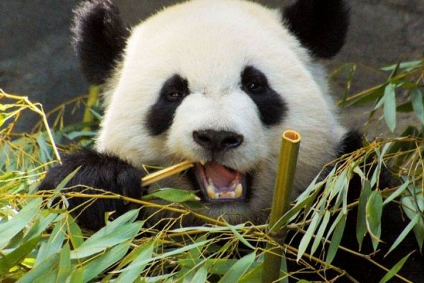
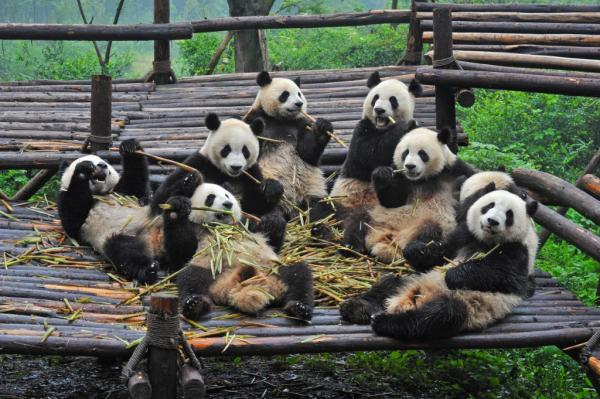
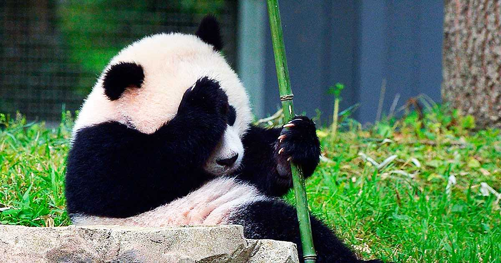

¿El oso panda está en peligro de extinción?
El oso panda es una especie animal conocida mundialmente.
Sus problemas de conservación, la cría de individuos en cautividad
y el tráfico ilegal son hechos con una gran repercusión mediática.
El Gobierno Chino, en los últimos años, ha llevado a cabo acciones para
frenar el declive de esta especie y parece que se están obteniendo resultados positivos.
La primera pregunta a la que responderemos en este artículo de ExpertoAnimal es por qué
los osos pandas están en peligro de extinción y, si este grado de conservación, aún se
mantiene. Así mismo, comentaremos qué se está haciendo para que no se extinga el oso panda.
Causas de que el oso panda esté en peligro de extinción
Tiempo atrás, el oso panda gigante se distribuía por toda China,
incluso habitaba ciertas regiones de Vietnam y Birmania. Actualmente,
ha quedado relegada a ciertas regiones montañosas de Wanglang, Huanglong,
Baima y Wujiao.
Como otros animales en peligro de extinción, no existe una única razón para
el declive del oso panda. Esta especie está siendo amenazada por:
Acciones humanas, fragmentación y pérdida de hábitat
La construcción de carreteras, presas, minas y otras infraestructuras creadas
por el ser humano son una de las principales amenazas que sufren las distintas
poblaciones de oso panda. Todos estos proyectos aumentan la fragmentación del
hábitat, alejando cada vez más a unas poblaciones de otras.
Por otro lado, el incremento del turismo no sostenible en ciertas áreas podría
afectar de forma negativa a los pandas. La presencia de ganado y animales domésticos,
además de dañar los hábitat en sí, también pueden traer enfermedades y patógenos que
podrían afectar a la salud de los osos pandas.
Pérdida de diversidad genética
La pérdida continuada de hábitats, incluyendo la desforestación, ha tenido efectos
sobre las poblaciones de oso panda gigante. Un hábitat tan fragmentado ha provocado la
separación de las grandes poblaciones, resultando en poblaciones aisladas y con un número
reducido de ejemplares.
Los estudios genómicos han demostrado que la variabilidad genómica del oso panda es amplia
pero, si los intercambios entre las poblaciones debido a la falta de conectividad siguen disminuyendo,
la diversidad genética de las poblaciones pequeñas pueden verse comprometida, aumentando la
vulnerabilidad hacia la extinción.
Soluciones para evitar la extinción del oso panda
El oso panda gigante ha sido una de las especies por las que más acciones se han llevado a cabo para mejorar
su estado de conservación. A continuación, enumeraremos algunas de estas acciones:
-En 1981, China se incorporó a la Convención sobre el Comercio Internacional de Especies en Peligro (CITES),
lo que provocó que el comercio de este animal o cualquier parte de su cuerpo fuera ilegal.
-La publicación de la Ley de Protección de la Naturaleza en 1988, ilegalizó el furtivismo de esta especie.
-En 1992, el Proyecto Nacional de Conservación para el Panda Gigante lanzó un plan de conservación, estableciéndose el sistema de reservas de pandas. Actualmente cuenta con 67 reservas.
-A partir de 1992, el Gobierno Chino destinó parte del presupuesto para crear infraestructuras y capacitar al personal de las reservas. Estableció vigilancia para luchar contra el furtivismo,
controló las actividades humanas dentro de las reservas e, incluso, reubicó asentamientos humanos fuera de la zona de reserva.
-En 1997, El Programa de Conservación de Bosques Naturales para mitigar los efectos de las inundaciones sobre la población humana tuvo repercusiones positivas sobre los pandas, ya que se prohibió la tala masiva de árboles en el hábitat del panda.
-En ese mismo año nació el Programa Grano a Verde, en el que los propios agricultores reforestaban zonas de ladera muy erosionadas dentro de las regiones que habita el panda.
-Otra estrategia ha sido la de criar pandas en cautividad para su posterior reintroducción, para así aumentar la diversidad genética de la especie en las subpoblaciones más aisladas.